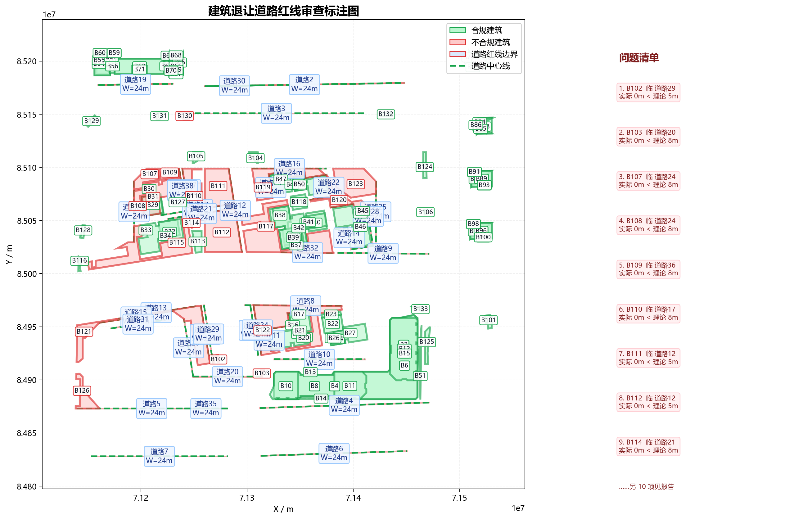

| 建筑名称 | 类型 | 高度(m) | 临接道路 | 实际让距(m) | 理论让距(m) | 判定 | 依据链 |
|---|---|---|---|---|---|---|---|
| B1 | 多层 | 19.98 | 道路4 | 3505.17 | 8.00 | 合规 | 表3-2：20m<道路红线宽度≤40m，多层建筑，退让=8.0m；非交叉口情形 |
| B2 | 多层 | 19.98 | 道路4 | 3705.06 | 8.00 | 合规 | 表3-2：20m<道路红线宽度≤40m，多层建筑，退让=8.0m；非交叉口情形 |
| B3 | 多层 | 35.00 | 道路4 | 14648.83 | 8.00 | 合规 | 表3-2：20m<道路红线宽度≤40m，高层建筑，退让=8Q=8×1=8m；非交叉口情形 |
| B4 | 多层 | 35.00 | 道路4 | 14855.20 | 8.00 | 合规 | 表3-2：20m<道路红线宽度≤40m，高层建筑，退让=8Q=8×1=8m；非交叉口情形 |
| B5 | 低层 | 0.00 | 道路4 | 33617.86 | 5.00 | 合规 | 表3-2：20m<道路红线宽度≤40m，低层建筑，退让=5.0m；非交叉口情形 |
| B6 | 低层 | 0.00 | 道路4 | 33824.24 | 5.00 | 合规 | 表3-2：20m<道路红线宽度≤40m，低层建筑，退让=5.0m；非交叉口情形 |
| B7 | 多层 | 35.00 | 道路4 | 15224.00 | 8.00 | 合规 | 表3-2：20m<道路红线宽度≤40m，高层建筑，退让=8Q=8×1=8m；非交叉口情形 |
| B8 | 多层 | 35.00 | 道路4 | 15471.65 | 8.00 | 合规 | 表3-2：20m<道路红线宽度≤40m，高层建筑，退让=8Q=8×1=8m；非交叉口情形 |
| B9 | 低层 | 0.00 | 道路10 | 33985.77 | 5.00 | 合规 | 表3-2：20m<道路红线宽度≤40m，低层建筑，退让=5.0m；非交叉口情形 |
| B10 | 多层 | 35.00 | 道路4 | 7144.12 | 8.00 | 合规 | 表3-2：20m<道路红线宽度≤40m，高层建筑，退让=8Q=8×1=8m；非交叉口情形 |
| B11 | 低层 | 0.00 | 道路4 | 5196.65 | 5.00 | 合规 | 表3-2：20m<道路红线宽度≤40m，低层建筑，退让=5.0m；非交叉口情形 |
| B12 | 低层 | 0.00 | 道路4 | 21295.82 | 5.00 | 合规 | 表3-2：20m<道路红线宽度≤40m，低层建筑，退让=5.0m；非交叉口情形 |
| B13 | 多层 | 35.00 | 道路10 | 11588.00 | 8.00 | 合规 | 表3-2：20m<道路红线宽度≤40m，高层建筑，退让=8Q=8×1=8m；非交叉口情形 |
| B14 | 多层 | 35.00 | 道路4 | 5977.58 | 8.00 | 合规 | 表3-2：20m<道路红线宽度≤40m，高层建筑，退让=8Q=8×1=8m；非交叉口情形 |
| B15 | 低层 | 0.00 | 道路10 | 34244.00 | 5.00 | 合规 | 表3-2：20m<道路红线宽度≤40m，低层建筑，退让=5.0m；非交叉口情形 |
| B16 | 多层 | 24.18 | 道路11 | 1488.00 | 8.00 | 合规 | 表3-2：20m<道路红线宽度≤40m，高层建筑，退让=8Q=8×1=8m；非交叉口情形 |
| B17 | 多层 | 23.08 | 道路11 | 1488.00 | 8.00 | 合规 | 表3-2：20m<道路红线宽度≤40m，多层建筑，退让=8.0m；非交叉口情形 |
| B18 | 多层 | 24.18 | 道路11 | 15787.18 | 8.00 | 合规 | 表3-2：20m<道路红线宽度≤40m，高层建筑，退让=8Q=8×1=8m；非交叉口情形 |
| B19 | 多层 | 24.18 | 道路11 | 8610.01 | 8.00 | 合规 | 表3-2：20m<道路红线宽度≤40m，高层建筑，退让=8Q=8×1=8m；非交叉口情形 |
| B20 | 多层 | 24.18 | 道路11 | 16830.20 | 8.00 | 合规 | 表3-2：20m<道路红线宽度≤40m，高层建筑，退让=8Q=8×1=8m；非交叉口情形 |
| B21 | 多层 | 24.18 | 道路11 | 1488.00 | 8.00 | 合规 | 表3-2：20m<道路红线宽度≤40m，高层建筑，退让=8Q=8×1=8m；非交叉口情形 |
| B22 | 多层 | 18.88 | 道路8 | 8079.44 | 8.00 | 合规 | 表3-2：20m<道路红线宽度≤40m，多层建筑，退让=8.0m；非交叉口情形 |
| B23 | 多层 | 18.88 | 道路8 | 5120.70 | 8.00 | 合规 | 表3-2：20m<道路红线宽度≤40m，多层建筑，退让=8.0m；非交叉口情形 |
| B24 | 多层 | 19.98 | 道路10 | 13231.48 | 8.00 | 合规 | 表3-2：20m<道路红线宽度≤40m，多层建筑，退让=8.0m；非交叉口情形 |
| B25 | 多层 | 19.98 | 道路10 | 17256.34 | 8.00 | 合规 | 表3-2：20m<道路红线宽度≤40m，多层建筑，退让=8.0m；非交叉口情形 |
| B26 | 多层 | 19.98 | 道路10 | 18931.42 | 8.00 | 合规 | 表3-2：20m<道路红线宽度≤40m，多层建筑，退让=8.0m；非交叉口情形 |
| B27 | 多层 | 19.98 | 道路10 | 13231.48 | 8.00 | 合规 | 表3-2：20m<道路红线宽度≤40m，多层建筑，退让=8.0m；非交叉口情形 |
| B28 | 多层 | 15.78 | 道路17 | 1653.61 | 8.00 | 合规 | 表3-2：20m<道路红线宽度≤40m，多层建筑，退让=8.0m；非交叉口情形 |
| B29 | 多层 | 15.78 | 道路17 | 2053.61 | 8.00 | 合规 | 表3-2：20m<道路红线宽度≤40m，多层建筑，退让=8.0m；非交叉口情形 |
| B30 | 多层 | 15.78 | 道路24 | 13672.32 | 8.00 | 合规 | 表3-2：20m<道路红线宽度≤40m，多层建筑，退让=8.0m；非交叉口情形 |
| B31 | 多层 | 15.78 | 道路36 | 0.00 | 8.00 | 不合规 | 表3-2：20m<道路红线宽度≤40m，多层建筑，退让=8.0m；第3款：道路交叉口四周建筑控制值5.0m |
| B31 | 多层 | 15.78 | 道路38 | 0.00 | 8.00 | 不合规 | 表3-2：20m<道路红线宽度≤40m，多层建筑，退让=8.0m；第3款：道路交叉口四周建筑控制值5.0m |
| B32 | 多层 | 23.08 | 道路21 | 1822.39 | 8.00 | 合规 | 表3-2：20m<道路红线宽度≤40m，多层建筑，退让=8.0m；非交叉口情形 |
| B33 | 多层 | 24.18 | 道路24 | 10641.79 | 8.00 | 合规 | 表3-2：20m<道路红线宽度≤40m，高层建筑，退让=8Q=8×1=8m；非交叉口情形 |
| B34 | 多层 | 24.18 | 道路21 | 1822.39 | 8.00 | 合规 | 表3-2：20m<道路红线宽度≤40m，高层建筑，退让=8Q=8×1=8m；非交叉口情形 |
| B35 | 多层 | 23.08 | 道路32 | 6553.95 | 8.00 | 合规 | 表3-2：20m<道路红线宽度≤40m，多层建筑，退让=8.0m；非交叉口情形 |
| B36 | 多层 | 23.08 | 道路22 | 17972.96 | 8.00 | 合规 | 表3-2：20m<道路红线宽度≤40m，多层建筑，退让=8.0m；非交叉口情形 |
| B37 | 多层 | 24.18 | 道路32 | 3595.14 | 8.00 | 合规 | 表3-2：20m<道路红线宽度≤40m，高层建筑，退让=8Q=8×1=8m；非交叉口情形 |
| B38 | 多层 | 23.08 | 道路23 | 9824.82 | 8.00 | 合规 | 表3-2：20m<道路红线宽度≤40m，多层建筑，退让=8.0m；非交叉口情形 |
| B39 | 多层 | 23.08 | 道路32 | 3099.71 | 8.00 | 合规 | 表3-2：20m<道路红线宽度≤40m，多层建筑，退让=8.0m；非交叉口情形 |
| B40 | 多层 | 24.18 | 道路28 | 6762.52 | 8.00 | 合规 | 表3-2：20m<道路红线宽度≤40m，高层建筑，退让=8Q=8×1=8m；非交叉口情形 |
| B41 | 多层 | 23.08 | 道路22 | 17972.96 | 8.00 | 合规 | 表3-2：20m<道路红线宽度≤40m，多层建筑，退让=8.0m；非交叉口情形 |
| B42 | 多层 | 23.08 | 道路32 | 3099.71 | 8.00 | 合规 | 表3-2：20m<道路红线宽度≤40m，多层建筑，退让=8.0m；非交叉口情形 |
| B43 | 多层 | 23.08 | 道路28 | 1888.00 | 8.00 | 合规 | 表3-2：20m<道路红线宽度≤40m，多层建筑，退让=8.0m；非交叉口情形 |
| B44 | 多层 | 23.08 | 道路28 | 4588.00 | 8.00 | 合规 | 表3-2：20m<道路红线宽度≤40m，多层建筑，退让=8.0m；非交叉口情形 |
| B45 | 多层 | 23.08 | 道路28 | 1888.00 | 8.00 | 合规 | 表3-2：20m<道路红线宽度≤40m，多层建筑，退让=8.0m；非交叉口情形 |
| B46 | 多层 | 24.18 | 道路28 | 1488.00 | 8.00 | 合规 | 表3-2：20m<道路红线宽度≤40m，高层建筑，退让=8Q=8×1=8m；非交叉口情形 |
| B46 | 多层 | 24.18 | 道路14 | 1488.00 | 8.00 | 合规 | 表3-2：20m<道路红线宽度≤40m，高层建筑，退让=8Q=8×1=8m；非交叉口情形 |
| B47 | 多层 | 14.68 | 道路23 | 1488.00 | 8.00 | 合规 | 表3-2：20m<道路红线宽度≤40m，多层建筑，退让=8.0m；非交叉口情形 |
| B48 | 多层 | 14.68 | 道路22 | 1488.00 | 8.00 | 合规 | 表3-2：20m<道路红线宽度≤40m，多层建筑，退让=8.0m；非交叉口情形 |
| B48 | 多层 | 14.68 | 道路23 | 1488.00 | 8.00 | 合规 | 表3-2：20m<道路红线宽度≤40m，多层建筑，退让=8.0m；非交叉口情形 |
| B49 | 多层 | 14.68 | 道路23 | 6846.35 | 8.00 | 合规 | 表3-2：20m<道路红线宽度≤40m，多层建筑，退让=8.0m；非交叉口情形 |
| B50 | 多层 | 14.68 | 道路23 | 1488.00 | 8.00 | 合规 | 表3-2：20m<道路红线宽度≤40m，多层建筑，退让=8.0m；非交叉口情形 |
| B50 | 多层 | 14.68 | 道路22 | 1488.00 | 8.00 | 合规 | 表3-2：20m<道路红线宽度≤40m，多层建筑，退让=8.0m；非交叉口情形 |
| B51 | 高层 | 0.00 | 道路4 | 2987.99 | 5.00 | 合规 | 表3-2：20m<道路红线宽度≤40m，低层建筑，退让=5.0m；非交叉口情形 |
| B52 | 低层 | 0.00 | 道路18 | 10585.53 | 5.00 | 合规 | 表3-2：20m<道路红线宽度≤40m，低层建筑，退让=5.0m；第3款：道路交叉口四周建筑控制值5.0m |
| B52 | 低层 | 0.00 | 道路19 | 10585.54 | 5.00 | 合规 | 表3-2：20m<道路红线宽度≤40m，低层建筑，退让=5.0m；第3款：道路交叉口四周建筑控制值5.0m |
| B53 | 低层 | 0.00 | 道路18 | 17304.61 | 5.00 | 合规 | 表3-2：20m<道路红线宽度≤40m，低层建筑，退让=5.0m；第3款：道路交叉口四周建筑控制值5.0m |
| B53 | 低层 | 0.00 | 道路19 | 17304.62 | 5.00 | 合规 | 表3-2：20m<道路红线宽度≤40m，低层建筑，退让=5.0m；第3款：道路交叉口四周建筑控制值5.0m |
| B54 | 低层 | 0.00 | 道路18 | 9085.74 | 5.00 | 合规 | 表3-2：20m<道路红线宽度≤40m，低层建筑，退让=5.0m；第3款：道路交叉口四周建筑控制值5.0m |
| B54 | 低层 | 0.00 | 道路19 | 9085.74 | 5.00 | 合规 | 表3-2：20m<道路红线宽度≤40m，低层建筑，退让=5.0m；第3款：道路交叉口四周建筑控制值5.0m |
| B55 | 低层 | 0.00 | 道路18 | 8682.48 | 5.00 | 合规 | 表3-2：20m<道路红线宽度≤40m，低层建筑，退让=5.0m；第3款：道路交叉口四周建筑控制值5.0m |
| B55 | 低层 | 0.00 | 道路19 | 8682.49 | 5.00 | 合规 | 表3-2：20m<道路红线宽度≤40m，低层建筑，退让=5.0m；第3款：道路交叉口四周建筑控制值5.0m |
| B56 | 低层 | 0.00 | 道路18 | 11108.38 | 5.00 | 合规 | 表3-2：20m<道路红线宽度≤40m，低层建筑，退让=5.0m；第3款：道路交叉口四周建筑控制值5.0m |
| B56 | 低层 | 0.00 | 道路19 | 11108.38 | 5.00 | 合规 | 表3-2：20m<道路红线宽度≤40m，低层建筑，退让=5.0m；第3款：道路交叉口四周建筑控制值5.0m |
| B57 | 低层 | 0.00 | 道路18 | 23553.29 | 5.00 | 合规 | 表3-2：20m<道路红线宽度≤40m，低层建筑，退让=5.0m；第3款：道路交叉口四周建筑控制值5.0m |
| B57 | 低层 | 0.00 | 道路19 | 23553.29 | 5.00 | 合规 | 表3-2：20m<道路红线宽度≤40m，低层建筑，退让=5.0m；第3款：道路交叉口四周建筑控制值5.0m |
| B58 | 低层 | 0.00 | 道路18 | 28355.73 | 5.00 | 合规 | 表3-2：20m<道路红线宽度≤40m，低层建筑，退让=5.0m；第3款：道路交叉口四周建筑控制值5.0m |
| B58 | 低层 | 0.00 | 道路19 | 28355.73 | 5.00 | 合规 | 表3-2：20m<道路红线宽度≤40m，低层建筑，退让=5.0m；第3款：道路交叉口四周建筑控制值5.0m |
| B59 | 低层 | 0.00 | 道路18 | 28562.32 | 5.00 | 合规 | 表3-2：20m<道路红线宽度≤40m，低层建筑，退让=5.0m；第3款：道路交叉口四周建筑控制值5.0m |
| B59 | 低层 | 0.00 | 道路19 | 28562.32 | 5.00 | 合规 | 表3-2：20m<道路红线宽度≤40m，低层建筑，退让=5.0m；第3款：道路交叉口四周建筑控制值5.0m |
| B60 | 低层 | 0.00 | 道路18 | 28673.46 | 5.00 | 合规 | 表3-2：20m<道路红线宽度≤40m，低层建筑，退让=5.0m；第3款：道路交叉口四周建筑控制值5.0m |
| B60 | 低层 | 0.00 | 道路19 | 28673.47 | 5.00 | 合规 | 表3-2：20m<道路红线宽度≤40m，低层建筑，退让=5.0m；第3款：道路交叉口四周建筑控制值5.0m |
| B61 | 低层 | 9.60 | 道路18 | 9740.36 | 5.00 | 合规 | 表3-2：20m<道路红线宽度≤40m，低层建筑，退让=5.0m；第3款：道路交叉口四周建筑控制值5.0m |
| B61 | 低层 | 9.60 | 道路19 | 9740.36 | 5.00 | 合规 | 表3-2：20m<道路红线宽度≤40m，低层建筑，退让=5.0m；第3款：道路交叉口四周建筑控制值5.0m |
| B62 | 低层 | 9.60 | 道路18 | 9333.79 | 5.00 | 合规 | 表3-2：20m<道路红线宽度≤40m，低层建筑，退让=5.0m；第3款：道路交叉口四周建筑控制值5.0m |
| B62 | 低层 | 9.60 | 道路19 | 9333.80 | 5.00 | 合规 | 表3-2：20m<道路红线宽度≤40m，低层建筑，退让=5.0m；第3款：道路交叉口四周建筑控制值5.0m |
| B63 | 低层 | 9.60 | 道路18 | 10265.84 | 5.00 | 合规 | 表3-2：20m<道路红线宽度≤40m，低层建筑，退让=5.0m；第3款：道路交叉口四周建筑控制值5.0m |
| B63 | 低层 | 9.60 | 道路19 | 10265.85 | 5.00 | 合规 | 表3-2：20m<道路红线宽度≤40m，低层建筑，退让=5.0m；第3款：道路交叉口四周建筑控制值5.0m |
| B64 | 低层 | 9.60 | 道路18 | 22704.80 | 5.00 | 合规 | 表3-2：20m<道路红线宽度≤40m，低层建筑，退让=5.0m；第3款：道路交叉口四周建筑控制值5.0m |
| B64 | 低层 | 9.60 | 道路19 | 22704.81 | 5.00 | 合规 | 表3-2：20m<道路红线宽度≤40m，低层建筑，退让=5.0m；第3款：道路交叉口四周建筑控制值5.0m |
| B65 | 低层 | 9.60 | 道路18 | 7710.36 | 5.00 | 合规 | 表3-2：20m<道路红线宽度≤40m，低层建筑，退让=5.0m；第3款：道路交叉口四周建筑控制值5.0m |
| B65 | 低层 | 9.60 | 道路19 | 7710.37 | 5.00 | 合规 | 表3-2：20m<道路红线宽度≤40m，低层建筑，退让=5.0m；第3款：道路交叉口四周建筑控制值5.0m |
| B66 | 低层 | 9.60 | 道路18 | 9610.36 | 5.00 | 合规 | 表3-2：20m<道路红线宽度≤40m，低层建筑，退让=5.0m；第3款：道路交叉口四周建筑控制值5.0m |
| B66 | 低层 | 9.60 | 道路19 | 9610.37 | 5.00 | 合规 | 表3-2：20m<道路红线宽度≤40m，低层建筑，退让=5.0m；第3款：道路交叉口四周建筑控制值5.0m |
| B67 | 低层 | 9.60 | 道路18 | 8110.36 | 5.00 | 合规 | 表3-2：20m<道路红线宽度≤40m，低层建筑，退让=5.0m；第3款：道路交叉口四周建筑控制值5.0m |
| B67 | 低层 | 9.60 | 道路19 | 8110.37 | 5.00 | 合规 | 表3-2：20m<道路红线宽度≤40m，低层建筑，退让=5.0m；第3款：道路交叉口四周建筑控制值5.0m |
| B68 | 低层 | 9.60 | 道路18 | 23210.36 | 5.00 | 合规 | 表3-2：20m<道路红线宽度≤40m，低层建筑，退让=5.0m；第3款：道路交叉口四周建筑控制值5.0m |
| B68 | 低层 | 9.60 | 道路19 | 23210.37 | 5.00 | 合规 | 表3-2：20m<道路红线宽度≤40m，低层建筑，退让=5.0m；第3款：道路交叉口四周建筑控制值5.0m |
| B69 | 低层 | 9.60 | 道路18 | 9610.36 | 5.00 | 合规 | 表3-2：20m<道路红线宽度≤40m，低层建筑，退让=5.0m；第3款：道路交叉口四周建筑控制值5.0m |
| B69 | 低层 | 9.60 | 道路19 | 9610.37 | 5.00 | 合规 | 表3-2：20m<道路红线宽度≤40m，低层建筑，退让=5.0m；第3款：道路交叉口四周建筑控制值5.0m |
| B70 | 低层 | 9.60 | 道路18 | 7766.85 | 5.00 | 合规 | 表3-2：20m<道路红线宽度≤40m，低层建筑，退让=5.0m；第3款：道路交叉口四周建筑控制值5.0m |
| B70 | 低层 | 9.60 | 道路19 | 7766.85 | 5.00 | 合规 | 表3-2：20m<道路红线宽度≤40m，低层建筑，退让=5.0m；第3款：道路交叉口四周建筑控制值5.0m |
| B71 | 低层 | 9.60 | 道路18 | 10010.28 | 5.00 | 合规 | 表3-2：20m<道路红线宽度≤40m，低层建筑，退让=5.0m；第3款：道路交叉口四周建筑控制值5.0m |
| B71 | 低层 | 9.60 | 道路19 | 10010.29 | 5.00 | 合规 | 表3-2：20m<道路红线宽度≤40m，低层建筑，退让=5.0m；第3款：道路交叉口四周建筑控制值5.0m |
| B72 | 低层 | 0.00 | 道路2 | 63189.69 | 5.00 | 合规 | 表3-2：20m<道路红线宽度≤40m，低层建筑，退让=5.0m；第3款：道路交叉口四周建筑控制值5.0m |
| B72 | 低层 | 0.00 | 道路1 | 63189.73 | 5.00 | 合规 | 表3-2：20m<道路红线宽度≤40m，低层建筑，退让=5.0m；第3款：道路交叉口四周建筑控制值5.0m |
| B73 | 低层 | 0.00 | 道路2 | 63335.39 | 5.00 | 合规 | 表3-2：20m<道路红线宽度≤40m，低层建筑，退让=5.0m；第3款：道路交叉口四周建筑控制值5.0m |
| B73 | 低层 | 0.00 | 道路1 | 63335.42 | 5.00 | 合规 | 表3-2：20m<道路红线宽度≤40m，低层建筑，退让=5.0m；第3款：道路交叉口四周建筑控制值5.0m |
| B74 | 低层 | 0.00 | 道路2 | 63753.51 | 5.00 | 合规 | 表3-2：20m<道路红线宽度≤40m，低层建筑，退让=5.0m；第3款：道路交叉口四周建筑控制值5.0m |
| B74 | 低层 | 0.00 | 道路1 | 63753.55 | 5.00 | 合规 | 表3-2：20m<道路红线宽度≤40m，低层建筑，退让=5.0m；第3款：道路交叉口四周建筑控制值5.0m |
| B75 | 低层 | 0.00 | 道路2 | 64110.76 | 5.00 | 合规 | 表3-2：20m<道路红线宽度≤40m，低层建筑，退让=5.0m；第3款：道路交叉口四周建筑控制值5.0m |
| B75 | 低层 | 0.00 | 道路1 | 64110.80 | 5.00 | 合规 | 表3-2：20m<道路红线宽度≤40m，低层建筑，退让=5.0m；第3款：道路交叉口四周建筑控制值5.0m |
| B76 | 低层 | 0.00 | 道路2 | 72020.95 | 5.00 | 合规 | 表3-2：20m<道路红线宽度≤40m，低层建筑，退让=5.0m；第3款：道路交叉口四周建筑控制值5.0m |
| B76 | 低层 | 0.00 | 道路1 | 72020.98 | 5.00 | 合规 | 表3-2：20m<道路红线宽度≤40m，低层建筑，退让=5.0m；第3款：道路交叉口四周建筑控制值5.0m |
| B77 | 低层 | 0.00 | 道路2 | 77407.92 | 5.00 | 合规 | 表3-2：20m<道路红线宽度≤40m，低层建筑，退让=5.0m；第3款：道路交叉口四周建筑控制值5.0m |
| B77 | 低层 | 0.00 | 道路1 | 77407.95 | 5.00 | 合规 | 表3-2：20m<道路红线宽度≤40m，低层建筑，退让=5.0m；第3款：道路交叉口四周建筑控制值5.0m |
| B78 | 低层 | 0.00 | 道路2 | 71999.36 | 5.00 | 合规 | 表3-2：20m<道路红线宽度≤40m，低层建筑，退让=5.0m；第3款：道路交叉口四周建筑控制值5.0m |
| B78 | 低层 | 0.00 | 道路1 | 71999.39 | 5.00 | 合规 | 表3-2：20m<道路红线宽度≤40m，低层建筑，退让=5.0m；第3款：道路交叉口四周建筑控制值5.0m |
| B79 | 低层 | 0.00 | 道路2 | 68140.63 | 5.00 | 合规 | 表3-2：20m<道路红线宽度≤40m，低层建筑，退让=5.0m；第3款：道路交叉口四周建筑控制值5.0m |
| B79 | 低层 | 0.00 | 道路1 | 68140.66 | 5.00 | 合规 | 表3-2：20m<道路红线宽度≤40m，低层建筑，退让=5.0m；第3款：道路交叉口四周建筑控制值5.0m |
| B80 | 低层 | 0.00 | 道路2 | 71999.36 | 5.00 | 合规 | 表3-2：20m<道路红线宽度≤40m，低层建筑，退让=5.0m；第3款：道路交叉口四周建筑控制值5.0m |
| B80 | 低层 | 0.00 | 道路1 | 71999.39 | 5.00 | 合规 | 表3-2：20m<道路红线宽度≤40m，低层建筑，退让=5.0m；第3款：道路交叉口四周建筑控制值5.0m |
| B81 | 低层 | 0.00 | 道路2 | 68140.63 | 5.00 | 合规 | 表3-2：20m<道路红线宽度≤40m，低层建筑，退让=5.0m；第3款：道路交叉口四周建筑控制值5.0m |
| B81 | 低层 | 0.00 | 道路1 | 68140.66 | 5.00 | 合规 | 表3-2：20m<道路红线宽度≤40m，低层建筑，退让=5.0m；第3款：道路交叉口四周建筑控制值5.0m |
| B82 | 低层 | 0.00 | 道路2 | 75909.43 | 5.00 | 合规 | 表3-2：20m<道路红线宽度≤40m，低层建筑，退让=5.0m；第3款：道路交叉口四周建筑控制值5.0m |
| B82 | 低层 | 0.00 | 道路1 | 75909.46 | 5.00 | 合规 | 表3-2：20m<道路红线宽度≤40m，低层建筑，退让=5.0m；第3款：道路交叉口四周建筑控制值5.0m |
| B83 | 低层 | 0.00 | 道路2 | 76288.13 | 5.00 | 合规 | 表3-2：20m<道路红线宽度≤40m，低层建筑，退让=5.0m；第3款：道路交叉口四周建筑控制值5.0m |
| B83 | 低层 | 0.00 | 道路1 | 76288.17 | 5.00 | 合规 | 表3-2：20m<道路红线宽度≤40m，低层建筑，退让=5.0m；第3款：道路交叉口四周建筑控制值5.0m |
| B84 | 低层 | 0.00 | 道路2 | 76652.83 | 5.00 | 合规 | 表3-2：20m<道路红线宽度≤40m，低层建筑，退让=5.0m；第3款：道路交叉口四周建筑控制值5.0m |
| B84 | 低层 | 0.00 | 道路1 | 76652.86 | 5.00 | 合规 | 表3-2：20m<道路红线宽度≤40m，低层建筑，退让=5.0m；第3款：道路交叉口四周建筑控制值5.0m |
| B85 | 低层 | 0.00 | 道路2 | 78822.15 | 5.00 | 合规 | 表3-2：20m<道路红线宽度≤40m，低层建筑，退让=5.0m；第3款：道路交叉口四周建筑控制值5.0m |
| B85 | 低层 | 0.00 | 道路1 | 78822.18 | 5.00 | 合规 | 表3-2：20m<道路红线宽度≤40m，低层建筑，退让=5.0m；第3款：道路交叉口四周建筑控制值5.0m |
| B86 | 低层 | 0.00 | 道路2 | 76151.39 | 5.00 | 合规 | 表3-2：20m<道路红线宽度≤40m，低层建筑，退让=5.0m；第3款：道路交叉口四周建筑控制值5.0m |
| B86 | 低层 | 0.00 | 道路1 | 76151.43 | 5.00 | 合规 | 表3-2：20m<道路红线宽度≤40m，低层建筑，退让=5.0m；第3款：道路交叉口四周建筑控制值5.0m |
| B87 | 低层 | 9.60 | 道路9 | 74448.34 | 5.00 | 合规 | 表3-2：20m<道路红线宽度≤40m，低层建筑，退让=5.0m；非交叉口情形 |
| B88 | 低层 | 9.60 | 道路9 | 75059.45 | 5.00 | 合规 | 表3-2：20m<道路红线宽度≤40m，低层建筑，退让=5.0m；非交叉口情形 |
| B89 | 低层 | 9.60 | 道路9 | 74782.26 | 5.00 | 合规 | 表3-2：20m<道路红线宽度≤40m，低层建筑，退让=5.0m；非交叉口情形 |
| B90 | 低层 | 9.60 | 道路9 | 85056.59 | 5.00 | 合规 | 表3-2：20m<道路红线宽度≤40m，低层建筑，退让=5.0m；非交叉口情形 |
| B91 | 低层 | 9.60 | 道路9 | 85143.90 | 5.00 | 合规 | 表3-2：20m<道路红线宽度≤40m，低层建筑，退让=5.0m；非交叉口情形 |
| B92 | 低层 | 0.00 | 道路9 | 79946.18 | 5.00 | 合规 | 表3-2：20m<道路红线宽度≤40m，低层建筑，退让=5.0m；非交叉口情形 |
| B93 | 低层 | 0.00 | 道路9 | 79821.80 | 5.00 | 合规 | 表3-2：20m<道路红线宽度≤40m，低层建筑，退让=5.0m；非交叉口情形 |
| B94 | 低层 | 0.00 | 道路9 | 41270.60 | 5.00 | 合规 | 表3-2：20m<道路红线宽度≤40m，低层建筑，退让=5.0m；非交叉口情形 |
| B95 | 低层 | 0.00 | 道路9 | 41931.39 | 5.00 | 合规 | 表3-2：20m<道路红线宽度≤40m，低层建筑，退让=5.0m；非交叉口情形 |
| B96 | 低层 | 0.00 | 道路9 | 41677.67 | 5.00 | 合规 | 表3-2：20m<道路红线宽度≤40m，低层建筑，退让=5.0m；非交叉口情形 |
| B97 | 低层 | 0.00 | 道路9 | 47034.69 | 5.00 | 合规 | 表3-2：20m<道路红线宽度≤40m，低层建筑，退让=5.0m；非交叉口情形 |
| B98 | 低层 | 0.00 | 道路9 | 47088.46 | 5.00 | 合规 | 表3-2：20m<道路红线宽度≤40m，低层建筑，退让=5.0m；非交叉口情形 |
| B99 | 低层 | 0.00 | 道路9 | 49858.12 | 5.00 | 合规 | 表3-2：20m<道路红线宽度≤40m，低层建筑，退让=5.0m；非交叉口情形 |
| B100 | 低层 | 0.00 | 道路9 | 49665.68 | 5.00 | 合规 | 表3-2：20m<道路红线宽度≤40m，低层建筑，退让=5.0m；非交叉口情形 |
| B101 | 低层 | 0.00 | 道路9 | 78529.31 | 5.00 | 合规 | 表3-2：20m<道路红线宽度≤40m，低层建筑，退让=5.0m；非交叉口情形 |
| B102 | 低层 | 0.00 | 道路29 | 0.00 | 5.00 | 不合规 | 表3-2：20m<道路红线宽度≤40m，低层建筑，退让=5.0m；非交叉口情形 |
| B103 | 多层 | 35.00 | 道路20 | 0.00 | 8.00 | 不合规 | 表3-2：20m<道路红线宽度≤40m，高层建筑，退让=8Q=8×1=8m；非交叉口情形 |
| B104 | 多层 | 35.20 | 道路16 | 4988.00 | 8.00 | 合规 | 表3-2：20m<道路红线宽度≤40m，高层建筑，退让=8Q=8×1=8m；非交叉口情形 |
| B105 | 低层 | 0.00 | 道路37 | 10935.52 | 5.00 | 合规 | 表3-2：20m<道路红线宽度≤40m，低层建筑，退让=5.0m；非交叉口情形 |
| B106 | 低层 | 0.00 | 道路9 | 36937.53 | 5.00 | 合规 | 表3-2：20m<道路红线宽度≤40m，低层建筑，退让=5.0m；非交叉口情形 |
| B107 | 多层 | 14.68 | 道路24 | 0.00 | 8.00 | 不合规 | 表3-2：20m<道路红线宽度≤40m，多层建筑，退让=8.0m；非交叉口情形 |
| B108 | 多层 | 15.78 | 道路24 | 0.00 | 8.00 | 不合规 | 表3-2：20m<道路红线宽度≤40m，多层建筑，退让=8.0m；非交叉口情形 |
| B109 | 多层 | 14.68 | 道路36 | 0.00 | 8.00 | 不合规 | 表3-2：20m<道路红线宽度≤40m，多层建筑，退让=8.0m；第3款：道路交叉口四周建筑控制值5.0m |
| B109 | 多层 | 14.68 | 道路38 | 0.00 | 8.00 | 不合规 | 表3-2：20m<道路红线宽度≤40m，多层建筑，退让=8.0m；第3款：道路交叉口四周建筑控制值5.0m |
| B110 | 多层 | 15.78 | 道路17 | 0.00 | 8.00 | 不合规 | 表3-2：20m<道路红线宽度≤40m，多层建筑，退让=8.0m；第3款：道路交叉口四周建筑控制值5.0m |
| B110 | 多层 | 15.78 | 道路37 | 0.00 | 8.00 | 不合规 | 表3-2：20m<道路红线宽度≤40m，多层建筑，退让=8.0m；第3款：道路交叉口四周建筑控制值5.0m |
| B111 | 低层 | 0.00 | 道路12 | 0.00 | 5.00 | 不合规 | 表3-2：20m<道路红线宽度≤40m，低层建筑，退让=5.0m；第3款：道路交叉口四周建筑控制值5.0m |
| B111 | 低层 | 0.00 | 道路17 | 0.00 | 5.00 | 不合规 | 表3-2：20m<道路红线宽度≤40m，低层建筑，退让=5.0m；第3款：道路交叉口四周建筑控制值5.0m |
| B112 | 低层 | 0.00 | 道路12 | 0.00 | 5.00 | 不合规 | 表3-2：20m<道路红线宽度≤40m，低层建筑，退让=5.0m；第3款：道路交叉口四周建筑控制值5.0m |
| B112 | 低层 | 0.00 | 道路21 | 0.00 | 5.00 | 不合规 | 表3-2：20m<道路红线宽度≤40m，低层建筑，退让=5.0m；第3款：道路交叉口四周建筑控制值5.0m |
| B113 | 低层 | 0.00 | 道路21 | 14919.79 | 5.00 | 合规 | 表3-2：20m<道路红线宽度≤40m，低层建筑，退让=5.0m；非交叉口情形 |
| B114 | 多层 | 23.08 | 道路21 | 0.00 | 8.00 | 不合规 | 表3-2：20m<道路红线宽度≤40m，多层建筑，退让=8.0m；非交叉口情形 |
| B115 | 低层 | 0.00 | 道路21 | 0.00 | 5.00 | 不合规 | 表3-2：20m<道路红线宽度≤40m，低层建筑，退让=5.0m；非交叉口情形 |
| B115 | 低层 | 0.00 | 道路24 | 0.00 | 5.00 | 不合规 | 表3-2：20m<道路红线宽度≤40m，低层建筑，退让=5.0m；非交叉口情形 |
| B116 | 低层 | 0.00 | 道路15 | 51859.19 | 5.00 | 合规 | 表3-2：20m<道路红线宽度≤40m，低层建筑，退让=5.0m；非交叉口情形 |
| B117 | 多层 | 23.08 | 道路32 | 0.00 | 8.00 | 不合规 | 表3-2：20m<道路红线宽度≤40m，多层建筑，退让=8.0m；非交叉口情形 |
| B118 | 多层 | 15.78 | 道路22 | 3328.83 | 8.00 | 合规 | 表3-2：20m<道路红线宽度≤40m，多层建筑，退让=8.0m；非交叉口情形 |
| B119 | 多层 | 14.68 | 道路16 | 0.00 | 8.00 | 不合规 | 表3-2：20m<道路红线宽度≤40m，多层建筑，退让=8.0m；非交叉口情形 |
| B119 | 多层 | 14.68 | 道路23 | 0.00 | 8.00 | 不合规 | 表3-2：20m<道路红线宽度≤40m，多层建筑，退让=8.0m；非交叉口情形 |
| B120 | 多层 | 23.08 | 道路16 | 0.00 | 8.00 | 不合规 | 表3-2：20m<道路红线宽度≤40m，多层建筑，退让=8.0m；非交叉口情形 |
| B120 | 多层 | 23.08 | 道路22 | 0.00 | 8.00 | 不合规 | 表3-2：20m<道路红线宽度≤40m，多层建筑，退让=8.0m；非交叉口情形 |
| B120 | 多层 | 23.08 | 道路25 | 0.00 | 8.00 | 不合规 | 表3-2：20m<道路红线宽度≤40m，多层建筑，退让=8.0m；非交叉口情形 |
| B120 | 多层 | 23.08 | 道路28 | 0.00 | 8.00 | 不合规 | 表3-2：20m<道路红线宽度≤40m，多层建筑，退让=8.0m；非交叉口情形 |
| B121 | 多层 | 19.43 | 道路13 | 0.00 | 8.00 | 不合规 | 表3-2：20m<道路红线宽度≤40m，多层建筑，退让=8.0m；非交叉口情形 |
| B121 | 多层 | 19.43 | 道路15 | 0.00 | 8.00 | 不合规 | 表3-2：20m<道路红线宽度≤40m，多层建筑，退让=8.0m；非交叉口情形 |
| B121 | 多层 | 19.43 | 道路26 | 0.00 | 8.00 | 不合规 | 表3-2：20m<道路红线宽度≤40m，多层建筑，退让=8.0m；非交叉口情形 |
| B121 | 多层 | 19.43 | 道路27 | 0.00 | 8.00 | 不合规 | 表3-2：20m<道路红线宽度≤40m，多层建筑，退让=8.0m；非交叉口情形 |
| B122 | 多层 | 23.08 | 道路8 | 0.00 | 8.00 | 不合规 | 表3-2：20m<道路红线宽度≤40m，多层建筑，退让=8.0m；第3款：道路交叉口四周建筑控制值5.0m |
| B122 | 多层 | 23.08 | 道路11 | 0.00 | 8.00 | 不合规 | 表3-2：20m<道路红线宽度≤40m，多层建筑，退让=8.0m；第3款：道路交叉口四周建筑控制值5.0m |
| B122 | 多层 | 23.08 | 道路34 | 0.00 | 8.00 | 不合规 | 表3-2：20m<道路红线宽度≤40m，多层建筑，退让=8.0m；第3款：道路交叉口四周建筑控制值5.0m |
| B123 | 多层 | 23.08 | 道路25 | 0.00 | 8.00 | 不合规 | 表3-2：20m<道路红线宽度≤40m，多层建筑，退让=8.0m；非交叉口情形 |
| B124 | 低层 | 0.00 | 道路25 | 44682.97 | 5.00 | 合规 | 表3-2：20m<道路红线宽度≤40m，低层建筑，退让=5.0m；非交叉口情形 |
| B125 | 低层 | 7.35 | 道路4 | 36012.59 | 5.00 | 合规 | 表3-2：20m<道路红线宽度≤40m，低层建筑，退让=5.0m；非交叉口情形 |
| B126 | 低层 | 0.00 | 道路5 | 0.00 | 5.00 | 不合规 | 表3-2：20m<道路红线宽度≤40m，低层建筑，退让=5.0m；非交叉口情形 |
| B127 | 多层 | 15.78 | 道路38 | 1583.68 | 8.00 | 合规 | 表3-2：20m<道路红线宽度≤40m，多层建筑，退让=8.0m；第3款：道路交叉口四周建筑控制值5.0m |
| B127 | 多层 | 15.78 | 道路36 | 1583.68 | 8.00 | 合规 | 表3-2：20m<道路红线宽度≤40m，多层建筑，退让=8.0m；第3款：道路交叉口四周建筑控制值5.0m |
| B128 | 低层 | 0.00 | 道路24 | 46145.01 | 5.00 | 合规 | 表3-2：20m<道路红线宽度≤40m，低层建筑，退让=5.0m；非交叉口情形 |
| B129 | 多层 | 35.20 | 道路18 | 28834.90 | 8.00 | 合规 | 表3-2：20m<道路红线宽度≤40m，高层建筑，退让=8Q=8×1=8m；第3款：道路交叉口四周建筑控制值5.0m |
| B129 | 多层 | 35.20 | 道路19 | 28834.90 | 8.00 | 合规 | 表3-2：20m<道路红线宽度≤40m，高层建筑，退让=8Q=8×1=8m；第3款：道路交叉口四周建筑控制值5.0m |
| B130 | 低层 | 9.60 | 道路3 | 0.00 | 5.00 | 不合规 | 表3-2：20m<道路红线宽度≤40m，低层建筑，退让=5.0m；非交叉口情形 |
| B131 | 低层 | 9.60 | 道路3 | 21739.15 | 5.00 | 合规 | 表3-2：20m<道路红线宽度≤40m，低层建筑，退让=5.0m；非交叉口情形 |
| B132 | 低层 | 0.00 | 道路3 | 14599.30 | 5.00 | 合规 | 表3-2：20m<道路红线宽度≤40m，低层建筑，退让=5.0m；非交叉口情形 |
| B133 | 低层 | 0.00 | 道路9 | 50024.17 | 5.00 | 合规 | 表3-2：20m<道路红线宽度≤40m，低层建筑，退让=5.0m；非交叉口情形 |
建筑内部仅保留短标签；绿色为合规建筑，红色为不合规建筑；道路红线为红色边界，中心线为绿色虚线，右侧为问题清单图例。

合规建筑：114 栋；不合规建筑：19 栋。
t_convert=0.7009s t_parse=0.9131s t_review=0.1080s t_render=0.8845s t_total=2.6066s